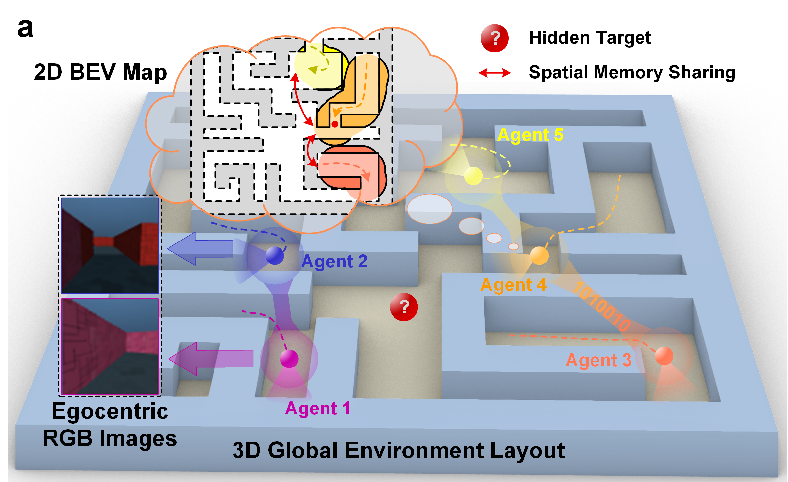
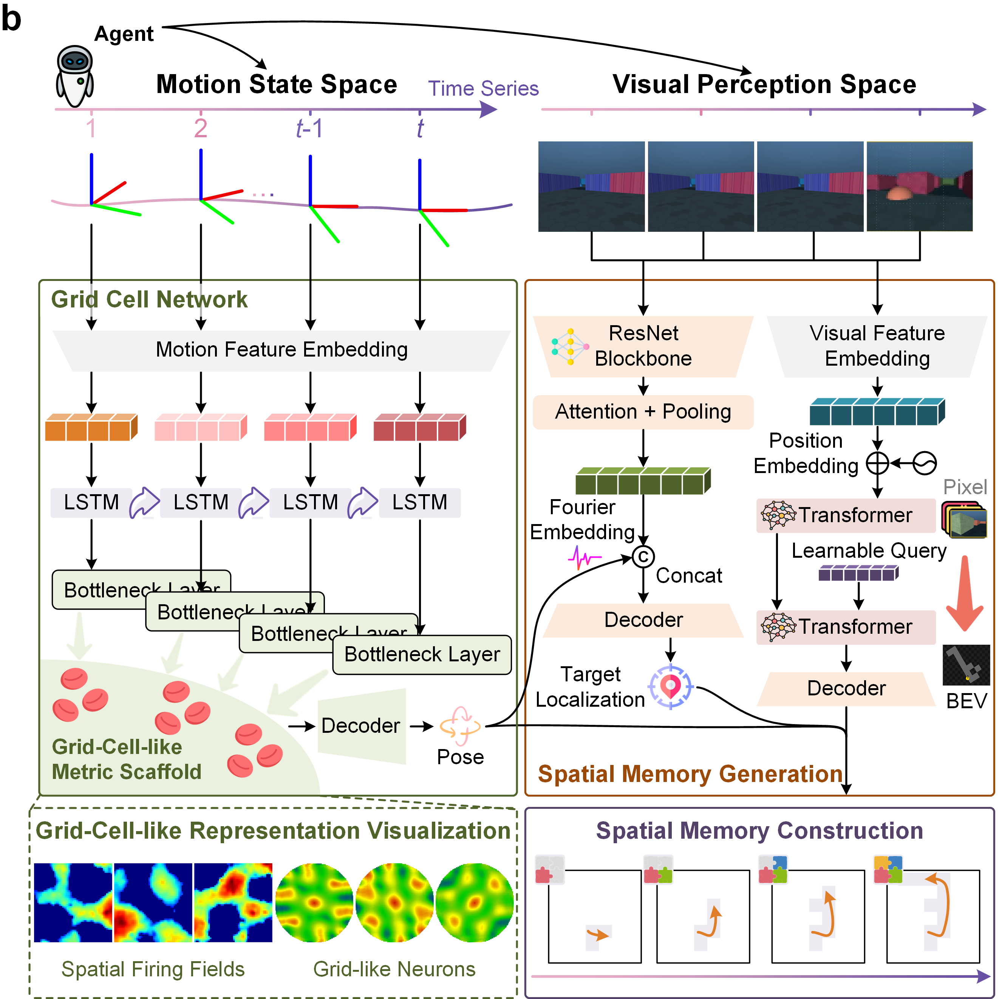
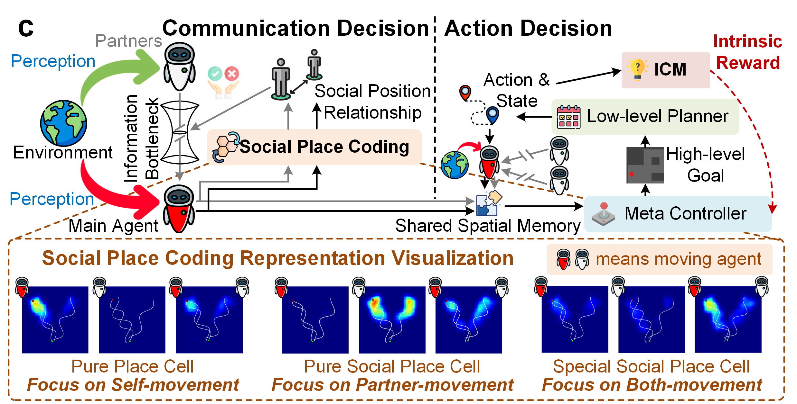

Sharing and reconstructing a consistent spatial memory is a critical challenge in multi-agent systems, where partial observability and limited bandwidth often lead to catastrophic failures in coordination. We introduce a multi-agent predictive coding framework that reframes coordination as the minimization of mutual predictive uncertainty. Instantiated as an information bottleneck objective, it prompts agents to learn not only who and what to communicate but also when. At the foundation of this framework lies a grid-cell-like metric scaffold for self-localization, emerging spontaneously from self-supervised motion prediction. Building upon this internal spatial code, agents develop a bandwidth-efficient communication protocol and specialized neural populations that encode partners’ locations—an artificial analogue of hippocampal social place cells (SPCs). These social representations are further enacted by a hierarchical reinforcement learning policy that actively explores to reduce joint uncertainty. On the Memory-Maze benchmark, our approach demonstrates exceptional resilience to bandwidth constraints: success degrades gracefully from 73.5% to 64.4% as bandwidth shrinks from 128 to 4 bits/step, whereas a full-broadcast baseline collapses from 67.6% to 28.6%. Our findings establish a theoretically principled and biologically plausible basis for how complex social representations emerge from a unified predictive drive, reframing social intelligence as an extension of individual cognition.



Overview of the predictive coding framework for shared spatial memory. a, The multi-agent cooperative navigation task. b, The single-agent spatial memory module. c, The agent's decision-making process.
📹 Video 1: Collaborative Mapping and Exploration
1. Maze 1 (Randseed = 4, the box color represents the search target color)
Baseline - Full Broadcast
HRL-ICM
2. Maze 2 (Randseed = 5)
Baseline - Full Broadcast
HRL-ICM
3. Maze 3 (Randseed = 6)
Baseline - Full Broadcast
HRL-ICM
Summary:
• Full Broadcast exhibits a much faster map construction speed initially, but this advantage diminishes sharply after the 20-communication round quota is used up.
• HRL-ICM strategy successfully avoids redundant communication, achieving faster mapping and exploration speeds.
📹 Video 2: Visualization of Emergent Social Place Cells
1. Case 1 (Self Moving & Partner Static)
• Pure Place Cell: Strong activation
• Pure SPC: Weak activation
• Special SPC: Strong activation
2. Case 2 (Self Static & Partner Moving)
• Pure Place Cell: Weak activation
• Pure SPC: Strong activation
• Special SPC: Strong activation
3. Case 3 (Both Moving)
• Pure Place Cell: Strong activation
• Pure SPC: Strong activation
• Special SPC: Strong activation
4. Case 4 (Both Static)
• Pure Place Cell: No activation
• Pure SPC: No activation
• Special SPC: No activation
Summary:
• Pure Place Cell: Focus only on self movement.
• Pure Social Place Cell: Focus only on partner movement.
• Special Social Place Cell: Focus on both self and partner movement.
📹 Video 3: Causal Intervention on Emergent Communication
1. Control Group (Collaborative search tasks without intervention)
Sharing Space Memory
Researching Assistance
• Shared spatial memory during search.
• Sender (Agent 0) finds the orange target and sends the "real information".
• Receiver (Agent 1) successfully finds the target based on the information.
Comparison of the Change Between the Exploration Map Before and After Sharing Spatial Memory
2. Intervention Group (Collaborative search tasks with fake target)
• Intervention: message intercepted → fake target injected.
• Receiver (Agent 0) trusts the fake target and gets stranded away from the real goal.
• Persistent mis-match proves the shared map carries causal influence.
3. Intervention Group (Collaborative search tasks with ghost map)
• Intervention: message intercepted → fake map injected.
• Receiver (Agent 0) executes the fake plan, keeps colliding with real walls.
• Persistent mis-match proves the shared map carries causal influence.
📹 Video 4: Full Framework - Collaborative Mapping and Exploration
Single-agent Map Exploration (first-person → global perspective)
2. Collaborative Mapping and Exploration (2 agents)
Maze 1 (Randseed = 5)
Maze 2 (Randseed = 19)
Maze 3 (Randseed = 58)
Maze 4 (Randseed = 82)
3. Collaborative Mapping and Exploration (3 agents)
Maze 5 (Randseed = 23)
Maze 6 (Randseed = 49)
Maze 7 (Randseed = 61)
Maze 8 (Randseed = 95)
📹 Video 5: Spontaneous Formation of Grid-Cell-like Representations
1. Evolution of Grid-Cell-like Neuronal Activation Patterns across Training Epochs
During training, the path integrator's neurons spontaneously evolve from disorganized firing patterns into highly regular, grid-cell-like representations.
2. Changes in Path Planning Prediction Performance over Training Epochs
As this grid-cell-like structure emerges, the network's path integration accuracy steadily improves, and the predicted trajectory becomes highly stable.
BibTex
@misc{fang2025sharedspatialmemorypredictive,
title={Shared Spatial Memory Through Predictive Coding},
author={Zhengru Fang and Yu Guo and Jingjing Wang and Yuang Zhang and Haonan An and Yinhai Wang and Yuguang Fang},
year={2025},
eprint={2511.04235},
archivePrefix={arXiv},
primaryClass={cs.AI},
url={https://arxiv.org/abs/2511.04235},
}